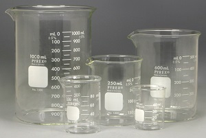

15 Jenis Alat Ukur Dan Fungsinya
Alat ukur adalah alat yang digunakan untuk mengukur nilai satuan suatu besaran. Besaran di sini bermacam macam seperti berat, suhu, panjang, waktu dan besaran-besaran lainnya. Sebagai contoh untuk mengukur panjang suatu ranting dapat diukur dengan menggunakan penggaris yang berarti besaran yang diukur nilainya di sini adalah panjang dan alat ukurnya adalah penggaris
Alat ukur yang salah dalam penggunaannya akan berakibat pada kesalahan pengukuran. Untuk itu bagi pengguna baru alat ukur tertentu perlu membaca pedoman penggunaan alat ukur terlebih dahulu.
Terdapat berbagai macam alat ukur dan mempunyai fungsi masing-masing. Beberapa alat ukur sudah awam digunakan oleh masyarakat umum dan beberapa alat hanya sebagian orang yang dapat memakainya. Untuk itu dalam artikel kali ini akan disajikan berbagai macam alat ukur dan fungsinya yang disertai dengan gambar agar para pembaca dapat mengetaui alat ukur yang mungkin akan digunakan suatu saat nanti.
1.Penggaris/Mistar
Penggaris atau kadang kala disebut mistar merupakan alat ukur panjang yang berfungsi untuk mengukur panjang suatu objek. Umumnya penggaris terbuat dari besi, mika atau kayu. Alat ukur ini sangat awam digunakan oleh masyarakat bahkan merupakan alat tulis menulis anak sekolah. Terdapat ukuran 10cm sampai 100cm. Ukuran yang paling sering dijumpai adalah penggaris 30cm
2.Meteran/Roll meter
Roll meter atau masyarakat Indonesia menyebutnya meteran merupakan alat untuk mengukur panjang suatu objek. Alat ini mirip dengan penggaris hanya saja roll meter memiliki jarak ukur yang lenih panjang sampai 50 meter. Alat ini digunakan dalam industri furniture untuk mengukur kayu atau papan yang akakn dibuat furniture. Terdapat pula roll meter yang berukuran sampai 100 meter hanya saja bentuknya sedikit berbeda dengan gambar di atas
3.Penyiku
Penyiku merupakan alat pengukur panjang sekaligus alat yang digunakan untuk memastikan ukuran sudut penyiku sama dengan 90 derajat. Pada gambar merupakan penyiku yang hanya mampu memeriksa sudut 90 derajat, namun terdapat penyiku yang sudah dilengkapi dengan ukuran sudut sehingga dapat diputar untuk memeriksa sudut benda. Alat ini biasanya dipakai di industri furniture
4.Busur Sudut
Selanjutnya adalah busur sudut. Alat ini umumnya dipakai oleh anak sekolah untuk mengukur sudut suatu objek ataupun untuk menggambar sudut. Busur sudut sering didapati saat pelajaran matematika yang digunakan untuk menyelesaikan soal matematika. Tentu alat ini pernah dibawa atau dipegang oleh pembaca saat sekolah kan?
5.Jangka Sorong
Jangka sorong adalah alat yang digunakan untuk mengukur panjang, ketebalan, diameter dan kedalaman suatu benda dengan satu alat ini. Jangka sorong mempunyai ketelitian pengukuran sebesar 0,1 mm
6.Mikrometer Sekrup
Mikrometer Sekrup juga digunakan untuk mengukur diameter dan ketebalan suatu benda. Akan tetapi alat ini memiliki ketelitian yang lebih tinggi daripada jangka sorong yaitu dengan ketelitian 0,01 mm. Maka dari itu mikrometer sekrup digunakan untuk mengukur diameter dan ketebalan benda-benda kecil, seperti koin.
7.Timbangan/Neraca
Timbangan atau neraca merupakan alat ukur yang digunakan untuk mengukur berat/massa suatu benda. Terdapat berbagai macam timbangan seperti timbangan duduk, timbangan badan, timbangan lengan tiga, timbangan digital, timbangan gantung dan lain-lain. Timbangan pada gambar adalah jenis timbangan duduk yang umumnya dipakai untuk mengukur berat bahan-bahan makanan maupun benda komersial yang lain. Timbangan terdapat pula di berbagai skala dan satuan bergantung dari jenis timbangannya.
8.Termometer
Termometer merupakan alat yang berfungsi untuk mengukur suhu (temperatur). Ukuran suhu yang terbaca dalam termometer adalah Celcius (oC). Terdapat beberapa macam jenis termometer, gambar di atas merupakan contoh jenis termometer yang paling umum digunakan dalam kesehatan ataupun dalam lab. Terdapat pula salah satu jenis termometer yang mungkin sering dijumpai saat pandemi Covid-19, yaitu termometer inframerah yang digunakan untuk mengukur suhu tubuh sebelum memasuki tempat keramaian.
9.Beaker Glass

Beaker glass adalah alat ukur volume untuk mengukur volume suatu cairan. Alat ini umumnya digunakan dalam lab dan digunakan untuk mengukur volume bahan-bahan kimia cair sebelum direaksikan. Pada beaker glass terdapat skala dalam bentuk garis yang menunjukkan ukuran volume. Alat ini tersedia dalam berbagai ukuran yang biasanya satuannya adalah ml.
10.Stopwatch
Stopwatch merupakan alat ukur yang digunakan untuk mengukur waktu dalam satuan detik. Alat ini biasanya dipakai untuk mengetahui kecepatan pelari, menentukan waktu reaksi, waktu pemanas, waktu pengerjaan sesuatu yang di bawah 1 jam. Alat ini kadangkala digantikan keberadaannya dengan jam, namun ketelitian stopwatch lebih tinggi dibandingkan dengan jam.
11.Barometer
Barometer digunakan untuk mengukur tekanan suatu tempat atau ruangan. Alat ini ditempatkan di lab kimia atau biologi yang berfungsi untuk mengetahui tekanan saat terjadi reaksi atau penanaman bakteri yang dipengaruhi oleh tekanan.
12.Voltmeter
Seperti namanya, voltmeter berfungsi untuk mengukur besarnya tegangan listrik dalam satuan volt. Cara pengukurannya adalah dengan menghubungkan secara pararel antara voltmeter dengan benda yang akan diukur tegangannya, maka jarum akan bergerak sesuai dengan besar tegangan listrik benda.
13.Ampere Meter
Amperemeter hampir sama dengan voltmeter, bentuknya juga hampir saja. Namun alat ini digunakan untuk mengukur kuat arus listrik suatu benda dalam satuan ampere. Selain itu cara pengukuran dengan amperemeter harus dirangkaikan secara seri dengan benda yang akan diukur kuat arusnya.
14.KWH Meter
Alat ukur ini sering dijumpai di depan rumah-rumah maupun di kost-an untuk mengukur berapa daya yang digunakan perjam. Alat ini menjadi tola ukur untuk melihat berapa jumlah tagihan listrik yang akan dibayarkan oleh penghuni rumah atau kost-an.
15.Dial Indicator
Dial indicator digunakan untuk mengukur kerataan suatu bidang datar. Umumnya dipakai di indutri manufaktur, untuk mengukur kerataan perkakas, maupun diperbengkelan yang biasanya untuk mengukur kerataan disc brake pada mobil. Alat ini mempunyai ketelitian 0,01 mm.
Terima Kasih sudah berkunjung:)